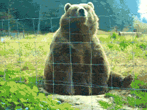

HELLO! 
I am Lotti and this is my website for my Instagram Food Highlights series, I hope you enjoy yada yada...if you make any of the recipes for some reason then you should totally show me and ill put it on the website : - )
This is purely a passion project and all programmed and made by me! If you'd like your recipe added or smth else feel free 2 reach out 